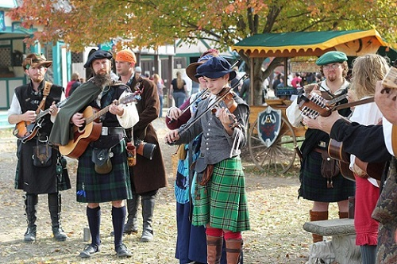
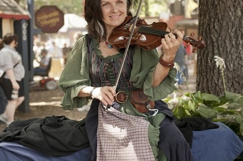
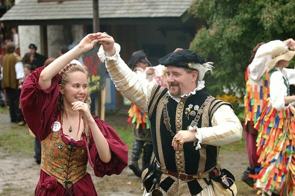
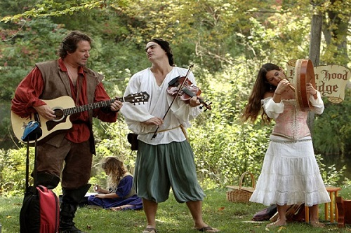
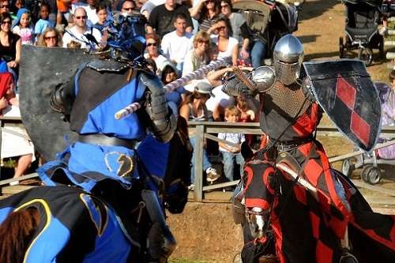
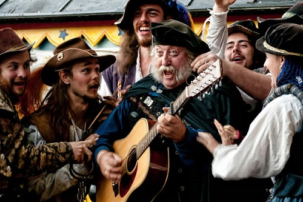
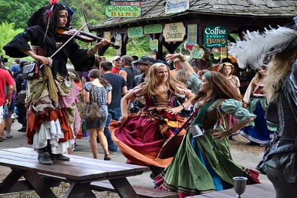
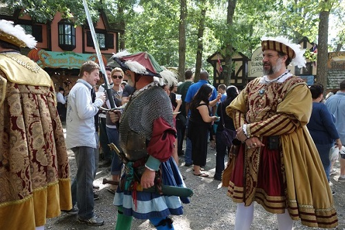

Be in the Scoop - WCCM Latest News
New Website Redesign
Published: November 27th
As you can currently see, the website has undergone a dramatic overhaul in terms of visual layout. Thank you everyone for being patient during our momentary downtime this past Sunday. Let us know what you think of the new website design. Is it pretty and user-firendly or is it utterly confusing to navigate through? Send us an email by using the contact box in the contact section.
MusicTubers Contest
Published: November 25th
Are you a single artist or part of a band and you want to make your music known around the state? WCCM can help with that! For the whole month of December, submit a video of you or your band performing an original song, upload it to your YouTube account, and send us a link to the video via email. A panel of 12 judges will determine the winners. The top five artists picked will be garenteed an entire time slot individually during our CT Local Talent radio segment Friday and Saturday 6:00 - 7:00pm. The top 3 contestants will also receive a prize of $300. First place will get the opportunity to record up to 12 songs in a professional studio for free!! Don't miss this awesome opportunity. Contest starts December 1st - December 31st.
Guitar Lessons
Published: November 21st
Our Music analyst Claudia Zimmerman will be offering Guitar Lessons starting in January. She's been playing for over 15 years in professional groups who have performed across the country. She will be offering a special 30% discount for the first 10 people who order lessons. Registration begins December 1st. Applications can be found at our physical location in Litchfield, CT.
Renaissance Fair
Published: November 18th
Our project coordinator Francisco Hamilton will be hosting this year's 5th annual Renaissance Fair at the Eastern Park in Lakeville, Connecticut from 3pm - 11pm January 23rd. There will be food, drinks, games, and most importantly, traditional music featuring madrigals, wind ensembles using traditional Renaissance instruments, plus much more! Contact Francisco Hamilton for more details. (visit the contact page for contact information). Check out the pictures below from last year's festivities!








Charity Concert
Published: November 11th
On Teusday December 9th, WCCM is sponsoring an orchestral concert featuring the band ensemble of Litchfield High School. Tickets are $10 while student and senior ticket prices are $5. The performance starts at 7:00pm in the Gymnasium. The ensemble will play a variety of Christmas songs and the High school Jazz combo will play several songs by Dave Brubeck. All of the proceeds will go to charity and the local soup kitchen in preparation for this holiday season. If you would like to donate money, but are unable to attend the concert, please contact Project Supervisor Daniel Hamilton.
Scholarship Award
Published: November 8th
We are pleased to announce that Susan Lopez is the 2014 recipient of the Alfonzo Hutchinson & Sheba Whitcomb Music scholarship. Every year WCCM issues one scholarship totalling $2,000 for a deserving high school senior who demonstrates exceptional music talent, has outstanding grades, is an outstanding character in the community, and demonstrates financial need. Susan will be attending Uconn in the Fall semester of 2015 and she will be majoring in Music Education. The entire staff congraduate her for her success and wish her luck with all of her future endeavours.
Grand Opening of "Take 5"
Published: November 4th
January 11th will be the Grand Opening of "Feelin' Good", a jazz music lounge and bar where we feature some of CT's brightest, most talented jazz players who play original songs as well as covers by prominent artists. We will have a classical timeslot as well as Open Mic Nights every Wednesday and Friday Nights from 9:00 - 11:00pm. Anyone can come and play. All you need to do is sign up at the counter at least an hour beforehand (Must be at least 21 years old to enter and play).